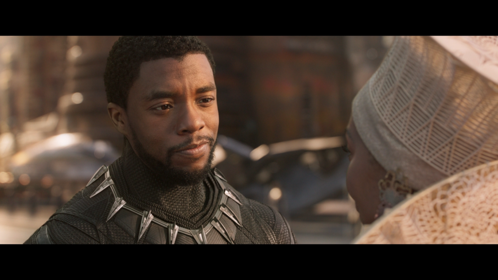
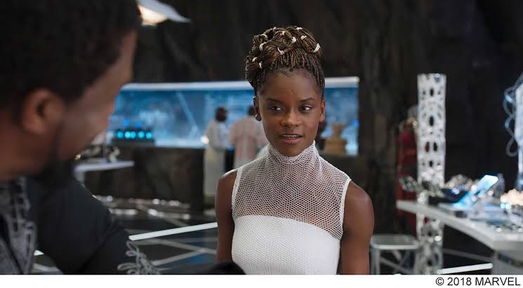
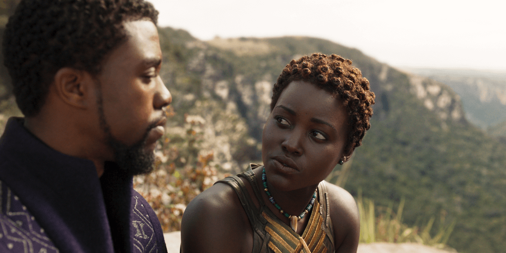
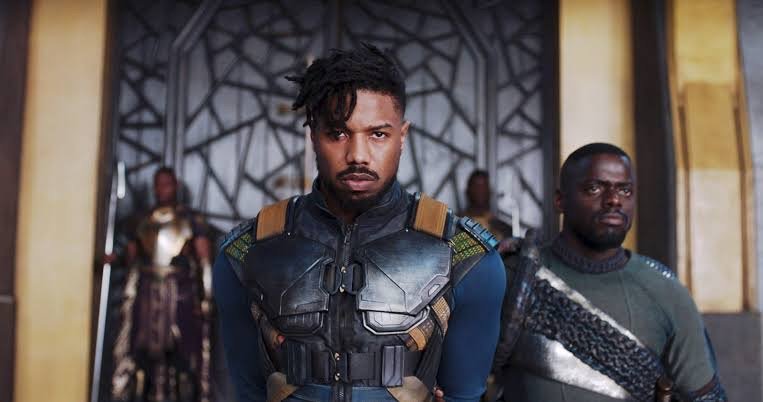

ティ・チャラ / ブラックパンサー
新国王 // ワカンダの守護豹
父ティ・チャカの崩御に伴い、超文明国家ワカンダの新たな王として即位した若き指導者。ハーブの力で超人的な身体能力を得て、妹シュリが開発した「キネティック・エネルギー（受けた衝撃を蓄積して放出する）」を纏う新型漆黒スーツを身につけて戦う。ワカンダを世界から隠し通すという祖国の伝統と、苦しむ世界の人々を救うべきという革新の間で葛藤し、王としての真の決断を下す。
「賢き者は橋を架け、愚者は壁を作る。我々は一つの民として手を取り合うべきなのです。」

シュリ
ワカンダの王女 // 天才天才科学者
ティ・チャラの妹であり、トニー・スタークをも凌駕するMCU史上最高峰のIQを持つ天才科学者。ワカンダのテクノロジー中枢であるデザイン・グループを統括し、キモヨビーズやソニック・ブラスター、遠隔操縦システムなど、ヴィブラニウムを用いた無数の最先端ガジェットを開発、ユーモアを忘れずに兄の戦いを全力でサポートする。
「次は衝撃を吸収する機能をつけたわよ」

ナキア
川の部族（リバー・トライブ） // 国際スパイ（ウォー・ドッグ）
ワカンダの秘密諜報員「ウォー・ドッグ」として世界中で潜入任務をこなす凄腕スパイ。ティ・チャラの元恋人。ワカンダの力を他国の難民や弱者の救済のために使うべきだという強い信念を持っており、王位がキルモンガーに奪われた際も冷静に状況を判断、ハーブを奪取して逆転の布石を打つ強さを持つ。
「私は自分の国が世界を助けられると信じてる」

エリック・キルモンガー（ウンジャダカ）
捨てられた悲劇の従兄弟 // 王座を奪う黄金の豹
かつてティ・チャカ国王に殺害された叔父ズリの息子であり、アメリカの貧民街で孤独に育ったティ・チャラの従兄弟。米軍の秘密忘却部隊「シールズ」で数多の暗殺をこなし、全身に殺害した人数の傷を刻んできた。虐げられる黒人同胞を解放するため、ワカンダのハイテク兵器で世界を恐怖で支配しようと画策。儀式でティ・チャラを圧倒し、王座を力ずくで強奪する。
「俺を海に沈めてくれ。祖先たちが飛び降りた海へな……彼らは知っていた、奴隷になるより『死』を選ぶ方が高潔だと。」